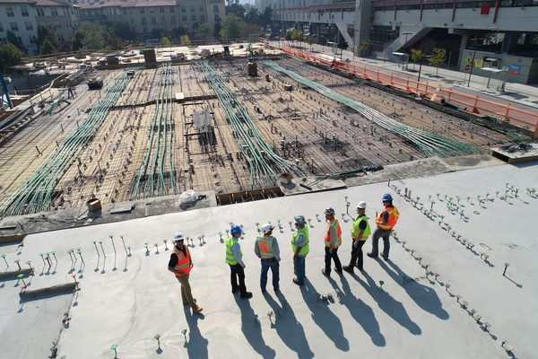

2026년 6월, 한국의 건설현장이 조용해졌다. 공사가 끝나서가 아니라 콘크리트가 도착하지 않았기 때문이다. 6월 8일 수도권 레미콘 운송노조가 전면 파업에 들어가며 믹서트럭 약 1만 1천 대가 멈췄다. 나흘 만에 25개 대형 건설사의 117개 현장에서 공급이 끊겼고, 약 16만㎥ 규모의 콘크리트 타설이 멈춰 섰다. 이 파업은 표면적으로는 운반비를 둘러싼 분쟁이다. 그러나 그 아래에는 한국 건설업이 얼마나 — 그리고 얼마나 불균등하게 — 취약해졌는지를 드러낸 스트레스 테스트가 있다.
1만 1천 대가 멈춘 날
숫자만으로도 충분히 경고적이다. 파업은 6월 8일 오전 8시부터 조합원 약 8,000명과 믹서트럭 1만 1천 대 — 수도권 전체의 약 70% — 를 동원했다. 노사는 회당 운반비를 4,200원 인상하는 잠정합의안에 도달했지만, 노조는 8,000원 인상을 요구했고, 6월 10일 조합원 찬반투표에서 68.3%가 반대해 합의안은 부결됐다. 6월 12일 기준 공급 중단은 25개 대형 건설사의 117개 현장으로 번졌다. 무엇보다 이 차질은 아파트 현장을 넘어 국가 기간산업에까지 닿았다. 삼성전자 평택 캠퍼스와 SK하이닉스 용인 반도체 클러스터가 모두 공정 지연 가능성에 직면했다. 콘크리트가 멈추면 반도체 공장이 기다린다.

비축할 수 없는 자재의 정치학
운송 분쟁이 왜 이렇게 빨리 산업 전체를 마비시키는가? 레미콘이 비축할 수 없는 유일한 골조 자재이기 때문이다. 레미콘은 배합 후 당일 타설해야 한다. 너무 오래 두면 굳어 폐기물이 된다. 철근은 창고에 쌓을 수 있고 타일은 야적장에서 기다릴 수 있지만, 콘크리트는 즉각적인 타설 일정에 맞춰 생산된다. 그래서 운송 단계 — 트럭 — 가 대체 불가능한 단일 실패점이 된다. 현장은 마감재 6개월 치 재고를 갖고 있어도 믹서트럭이 빠진 단 한 번의 아침에 완전히 멈출 수 있다. 이 파업은 건설에서 가장 평범한 자재가 동시에 가장 시간에 민감하며, 그래서 가장 정치적이라는 사실을 일깨운다.
셧다운 아래의 양극화
이 셧다운은 이미 휘어 있는 산업 위에 떨어진다. 한국 건설업은 2021년 이후 5년 연속 역성장을 기록했다. 2026년 1분기에만 폐업이 1,088건 — 전년 동기 대비 17.6% 증가 — 에 달했다. 그러나 고통은 고르게 분담되지 않는다. 대형 건설사는 해외 플랜트, 반도체, 데이터센터로 방향을 틀어 침체를 버티는 반면, 중소·전문 건설사는 그들 표현으로 "공사를 따내도 시작하는 순간 적자"인 시장을 말한다. 레미콘 파업 같은 공급 충격은 이 분열된 산업을 균일하게 때리지 않는다. 가장 약한 고리부터 끊는다. 포트폴리오가 분산된 대형 건설사는 2주 지연을 흡수하지만, 타설 단위로 연명하는 작은 회사는 그렇지 못하다.
"콘크리트는 어느 현장에서나 가장 평범한 자재이고, 단 하루도 비축할 수 없는 자재다. 바로 그래서 누가 그것을 운반하느냐를 둘러싼 싸움이 반도체 공장을 멈출 수 있다."
자재 산업이 가져가야 할 것
건축 자재를 조달하거나 공급하는 누구에게나 이 파업은 회복력에 관한 구체적 교훈을 준다. 첫째, 시간에 민감한 자재에 대한 단일 공급원 의존은 잠재적 셧다운 리스크이며, 레미콘 단계는 가장 눈에 띄는 사례일 뿐이다 — 완충 재고가 없는 모든 적시생산(JIT) 자재에 같은 논리가 적용된다. 둘째, 가장 노출된 곳은 협상력이 가장 약하고 현금 여력이 가장 얇은 중소·전문 건설사이며, 이는 공급 안정성이 이제 배경 가정이 아니라 경쟁 변수가 되었음을 뜻한다. 셋째, 이것은 다변화할 수 있는 자재 카테고리와 조달 채널 — 제2의 공급원, 비축 가능한 대체재, 사전제작 대체품이 존재하는 — 에 대한 논거다. 공급을 보장된 것으로 취급해 온 산업이, 값비싸게, 그렇지 않음을 배우고 있다.
편집장 코멘트
ARCHINODE는 6월 레미콘 파업을 노동 이슈라기보다 공급 회복력 이슈로 읽는다. 플랫폼의 작업 가설은 한국 자재 시장이 조용히 둘로 갈라지고 있다는 것이다 — 해외 매출과 분산 조달로 보호받는 대형 건설사 층, 그리고 완충 없이 모든 충격에 노출된 중소 건설사 층. 한국에 진입하는 자재 브랜드에게 이 분열은 전략 정보다. 프리미엄·프로젝트 안정 층과 가성비·회복력 추구 층은 같은 고객이 아니며 같은 제안을 받아서는 안 된다. 더 깊은 지점은 '가용성'이 '가격'·'성능'과 나란히 1차 구매 기준으로 복귀했다는 것이다. 공급 연속성 — 제2 공급원, 지역 재고, 사전제작 대체품 — 을 신뢰성 있게 약속할 수 있는 브랜드는 이제 2021년 시장이라면 평가하지 않았을 우위를 쥔다. 회복력이 제품의 기능이 되었다.